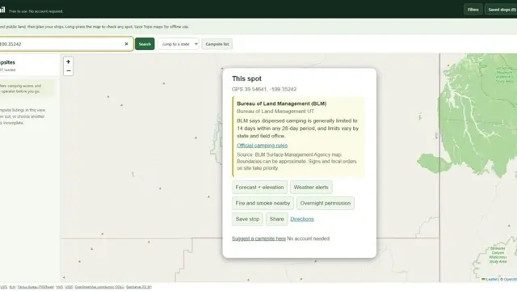
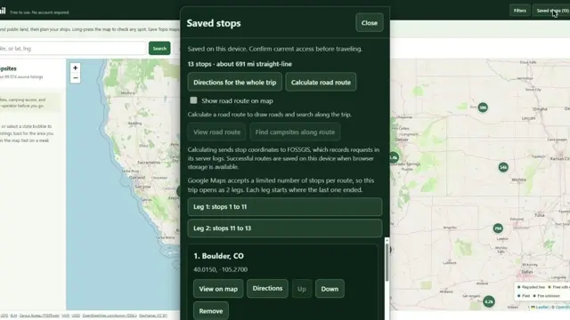
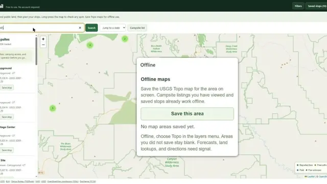

KampTrail how-to videos
Three short videos, each under 40 seconds. Videos load from YouTube only when you press play.
Is this BLM land? Check who manages any spot

- Find the area you want on the map, like Moab, Utah.
- On your phone, press and hold the map. On a computer, right-click.
- KampTrail shows the managing agency, such as the Bureau of Land Management (BLM) or the Forest Service, with that agency's general stay-limit guidance.
Boundaries can be approximate and do not grant permission to camp. Posted signs and local orders take priority.
Send a long trip to Google Maps in legs

- Save campsites or any spot as stops.
- Open Saved stops and choose Directions for the whole trip.
- KampTrail splits the route into legs that fit Google Maps. Each leg starts where the last one ended.
- Want a backup or another navigation app? Choose Export GPX.
Save topo maps before you lose signal

- While you still have signal, zoom to where you're heading.
- Open Offline and choose Save this area. KampTrail stores the USGS Topo map for that area on your device.
- When you lose signal, choose Topo in the layers menu.
Campsites you've viewed and your saved stops already work offline. Areas you didn't save stay blank. Forecasts, land lookups and directions need a connection.